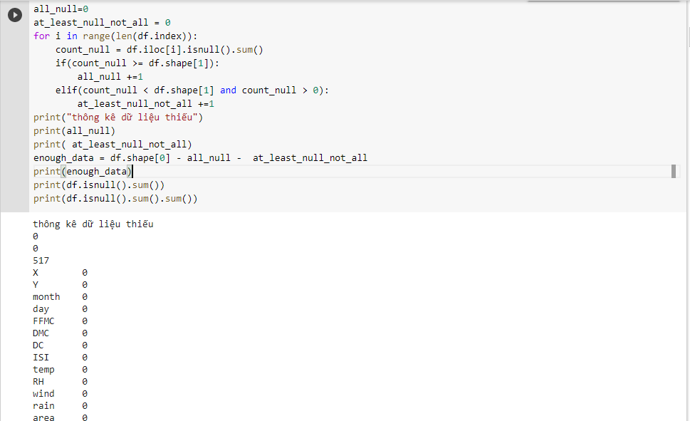

{% extends "simplechart.html" %}

{% block content %}

{% if labels|length > 0 %}
    <h4 class="text-center">Tính dữ liệu thiếu</h4>
    <br/>
{% endif %}

<p>==>không có cột dữ liệu nào bị thiếu</p>
{% endblock %}
